Light Tank (Tank Ringan)
Light tanks di War Thunder adalah jenis kendaraan tempur lapis baja yang dirancang untuk kecepatan, mobilitas, dan pengintaian. Mereka biasanya memiliki lapisan baja yang lebih tipis dibandingkan dengan medium atau heavy tanks, sehingga lebih rentan terhadap tembakan musuh. Namun, mereka unggul dalam hal kecepatan dan kemampuan manuver, memungkinkan mereka untuk dengan cepat berpindah posisi, menghindari serangan, dan melakukan serangan mendadak.
Light tanks sering digunakan untuk tugas pengintaian, di mana mereka dapat menjelajahi medan, mencari posisi musuh, dan memberikan informasi penting kepada tim. Mereka juga dapat digunakan untuk menyerang target yang lebih lemah atau untuk mendukung serangan dengan memberikan api penutup. Namun, karena lapisan baja yang tipis, light tanks harus berhati-hati dalam menghadapi kendaraan tempur yang lebih berat atau artileri, dan sering kali mengandalkan kecepatan dan manuver untuk bertahan hidup di medan perang.
Contoh:
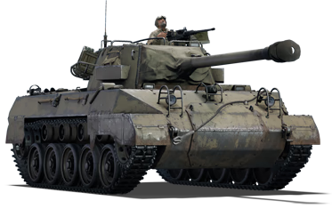
M18 GMC
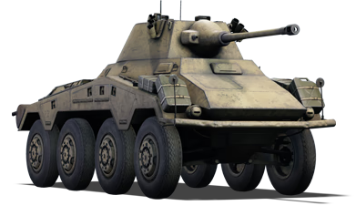
Schwerer Panzerspähwagen Sd.Kfz. 234/2 (Puma)
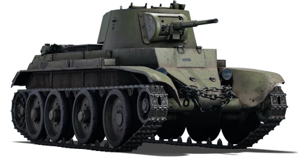
BT-7
Medium Tank (Tank Sedang)
Medium tanks di War Thunder adalah jenis kendaraan tempur lapis baja yang dirancang untuk keseimbangan antara kecepatan, mobilitas, dan perlindungan. Mereka memiliki lapisan baja yang lebih tebal dibandingkan light tanks, sehingga lebih tahan terhadap tembakan musuh. Namun, mereka biasanya lebih lambat dan kurang fleksibel dibandingkan light tanks.
Medium tanks sering digunakan untuk tugas utama dalam pertempuran, di mana mereka dapat menyerang target musuh dengan efektif sambil tetap memiliki perlindungan yang cukup. Mereka juga dapat digunakan untuk mendukung serangan dari arah lain atau menggantikan light tanks dalam situasi yang membutuhkan perlindungan tambahan.
Contoh:
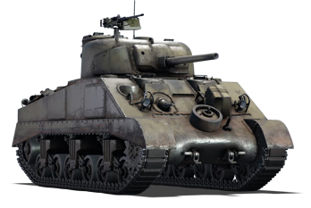
M4 Sherman
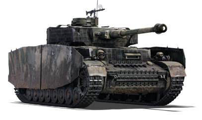
Panzerkampfwagen IV Ausführung H (Panzer IV H)
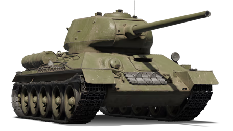
T-34-85
Heavy Tank (Tank Berat)
Heavy tanks di War Thunder adalah jenis kendaraan tempur lapis baja yang dirancang untuk perlindungan maksimum dan kekuatan tembakan yang tinggi. Mereka memiliki lapisan baja yang sangat tebal, sehingga sangat tahan terhadap tembakan musuh. Namun, mereka biasanya lebih lambat dan kurang fleksibel dibandingkan light tanks dan medium tanks.
Heavy tanks sering digunakan untuk tugas utama dalam pertempuran, di mana mereka dapat menyerang target musuh dengan efektif sambil tetap memiliki perlindungan yang sangat kuat. Mereka juga dapat digunakan untuk menghancurkan pertahanan musuh atau mendukung serangan dari arah lain.
Contoh:
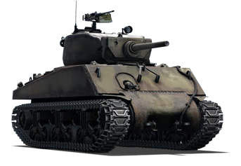
M4A3E2 Sherman (Jumbo)
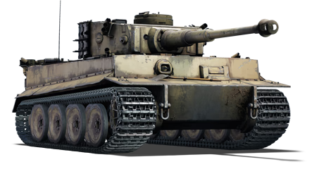
Panzerkampfwagen VI Ausführung H1 (Tiger H1)
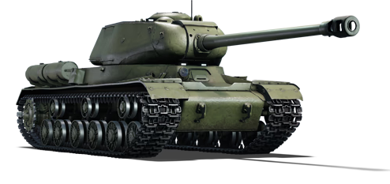
IS-2
Tank Destroyer (Penghancur Tank)
Tank destroyers di War Thunder adalah jenis kendaraan tempur yang dirancang khusus untuk menghancurkan tank musuh. Mereka biasanya memiliki kekuatan tembakan yang tinggi dan kemampuan penembakan yang baik, tetapi kurang perlindungan dibandingkan tank biasa.
Tank destroyers sering digunakan untuk menyerang tank musuh dari jarak jauh atau dalam situasi pertempuran yang membutuhkan kekuatan tembakan yang tinggi. Mereka juga dapat digunakan untuk menghancurkan pertahanan musuh atau mendukung serangan dari arah lain.
Contoh:
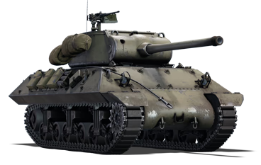
M36 Jackson
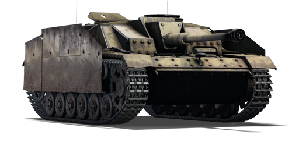
Sturmgeschütz III Ausführung G (Stug III G)
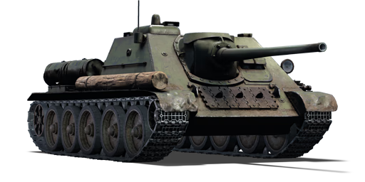
SU-85
Self Propelled Anti-Air (Senjata Anti-Pesawat Swa-Gerak)
Self Propelled Anti-Air (SPAA) adalah jenis kendaraan tempur yang dirancang khusus untuk melawan pesawat musuh. Mereka biasanya dilengkapi dengan senjata anti-pesawat yang kuat dan kemampuan untuk bergerak cepat di medan pertempuran.
Contoh:
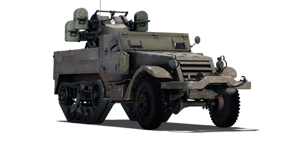
M16 Self Propelled Anti-Air
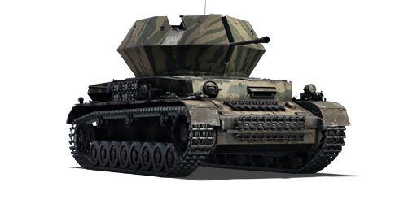
Ostwind
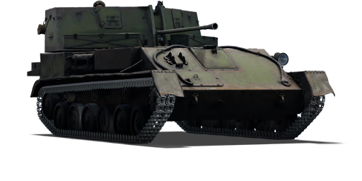
ZSU-37
Main Battle Tank (Tank Tempur Utama)
Main battle tank (MBT) di War Thunder adalah jenis kendaraan tempur yang dirancang untuk keseimbangan antara perlindungan, kekuatan tembakan, dan mobilitas. Mereka memiliki kemampuan untuk menyerang target musuh dengan efektif sambil tetap memiliki perlindungan yang cukup kuat. MBTs biasanya lebih fleksibel dibandingkan heavy tanks dan lebih tangguh dibandingkan light tanks.
MBT sering digunakan sebagai unit utama dalam pertempuran, di mana mereka dapat menyerang target musuh dengan efektif sambil tetap memiliki perlindungan yang cukup kuat. Mereka juga dapat digunakan untuk menghancurkan pertahanan musuh atau mendukung serangan dari arah lain.
Contoh:
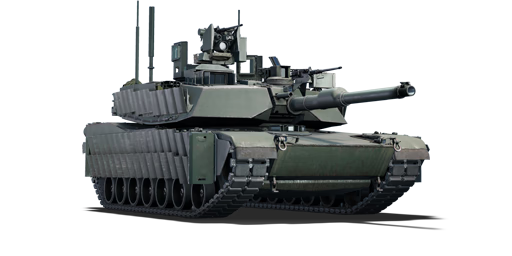
M1A2 SEPv2

Leopard 2A7V

T-90M